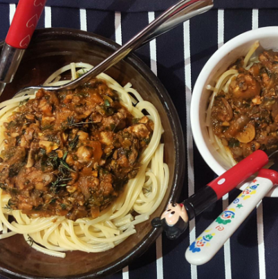
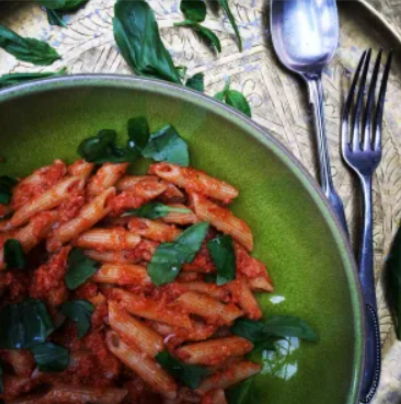
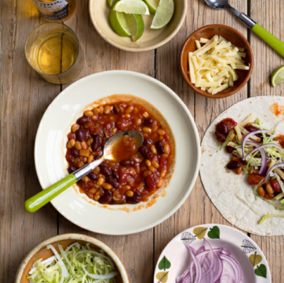
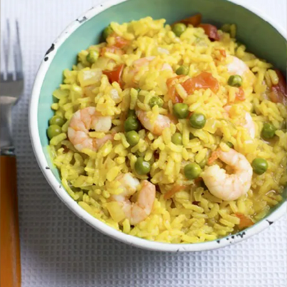
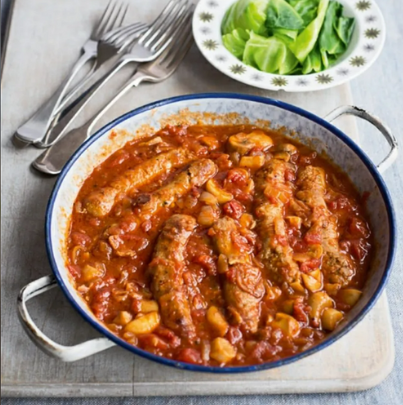
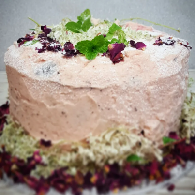
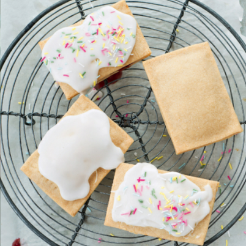

Recipies

Mushroom and spinach bolognese, 38p per portion

Penne Pappa al Pomodoro, 21p per portion

Mixed bean goulash, 29p per portion

Simple Paella, 67p per portion

Sausage & Bean Casserole, 60p per portion

Blackberry applesauce cake, 22p per portion

Home made Pop Tarts, 10p per portion

Registered charity number 897564231
© Copyright Cost Of Living Helper


Tel: 01223 344 556
Email: help@colhelper.com